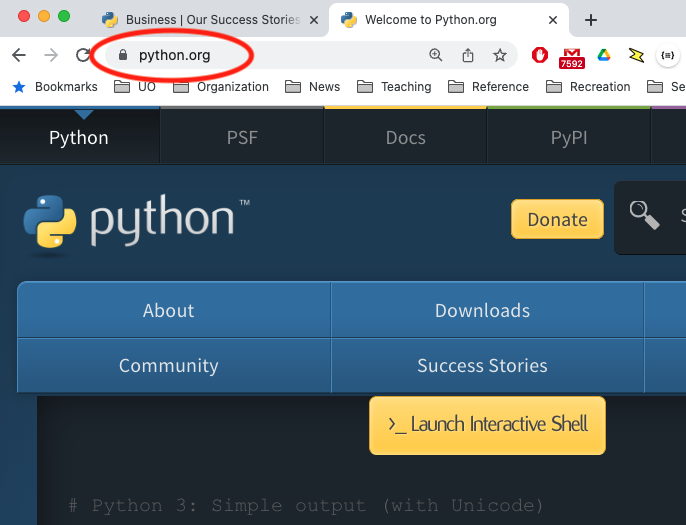
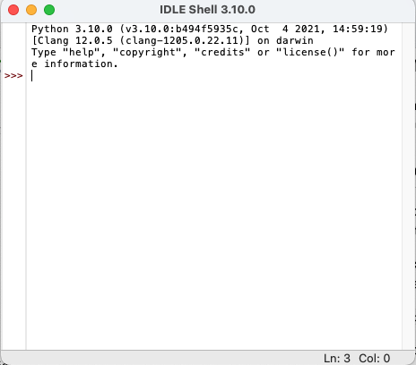

Installing Python and IDLE#
This is a project-oriented course. It is important that you have Python version 3.10 or later installed on the computer you will most often use for your class projects. For most students that will be a laptop computer or desktop computer.
Install Python 3 on Your Computer#
Python 3 runs well on a wide variety of computers. You will need a laptop or desktop computer; tablets and phones will not be a good environment for learning to program in Python. The precise steps for installing Python 3, as well as the precise commands for starting Python programming tools, necessarily varies depending on whether you are using Linux, MacOS, or Windows. We will cover the basics first in a generic manner, then provide some detailed notes for the most common platforms.
Download and Install#
Start by visiting python.org with your web browser.

Select Downloads and choose the installer or archive for your
computer. Typically you will want the download labeled as “Latest
Python 3 Release” for MacOS or Windows. If you are a Linux user,
select “Source code”. Then follow directions for your particular
platform.
MacOS Install#
The MacOS installer will work like other MacOS application installers. You should not have to do anything extra.
Windows 10 Install#
Press the “Download Python 3.x” (currently 3.10.7) button.
If the download page offers
you “Latest Python 3 Release” or “Latest Python 2 Release”, Choose
the Python 3 release. This will download an installer.
Run the installer and follow its directions.
Linux Install#
You may find it easier to install using apt-get or a similar
package installer for the version of Linux that you use. You can
find example instructions in
The Hitchhikers Guide to Linux.
Alternatively, you can download a “tarball” archive of the sources from
Python.org. As a Linux user, you are probably familiar with these
steps, which are similar to installation of many other tools in Linux.
Execute Python statements and programs#
Executing Python commands#
Python commands (statements) may be executed immediately in a console, or stored in a program file (often called a script) for execution later. In this course we will use IDLE both to execute statements directly and to edit and execute program files. (Later we will explore additional ways to edit and execute Python programs.)
Once you have installed Python 3 on your computer, you should be able to start IDLE from the command line. It should look something like this:

The >>> symbol is a prompt indicating that
the Python shell, or console, is ready to
receive a statement and execute it.
Try this by typing print("Hello!") on the
line with the prompt.
print("Hello")
Hello
If you have trouble with these steps, we can probably help you in class help hours, or a classmate may be able to help.
If you have gotten this far successfully, it is time to dive into Python programming, or review Python programming if you have done it before.